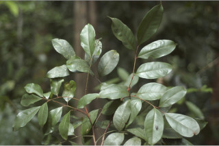

Images :



| Habit : | Large shrubs to small trees up to 8 m tall. |
| Leaves : | Leaves compound , imparipinnate , alternate , spiral ; rachis terete , pulvinate , ferruginous ; petiolule 0.3-0.6 cm long, canaliculate , slightly tomentose ; leaflets 3-7, alternate , 7-14 x 2.5-4.5 cm, elliptic to elliptic-oblong , apex caudate or acuminate with blunt tip, base acute or slightly attenuate , margin entire , glandular punctate , ferruginous when young, later glabrous ; secondary_nerves 8-12 pairs, looped near margin; tertiary_nerves broadly reticulate to obscure . |
| Inflorescence / Flower : | N/A |
| Fruit and Seed : | N/A |